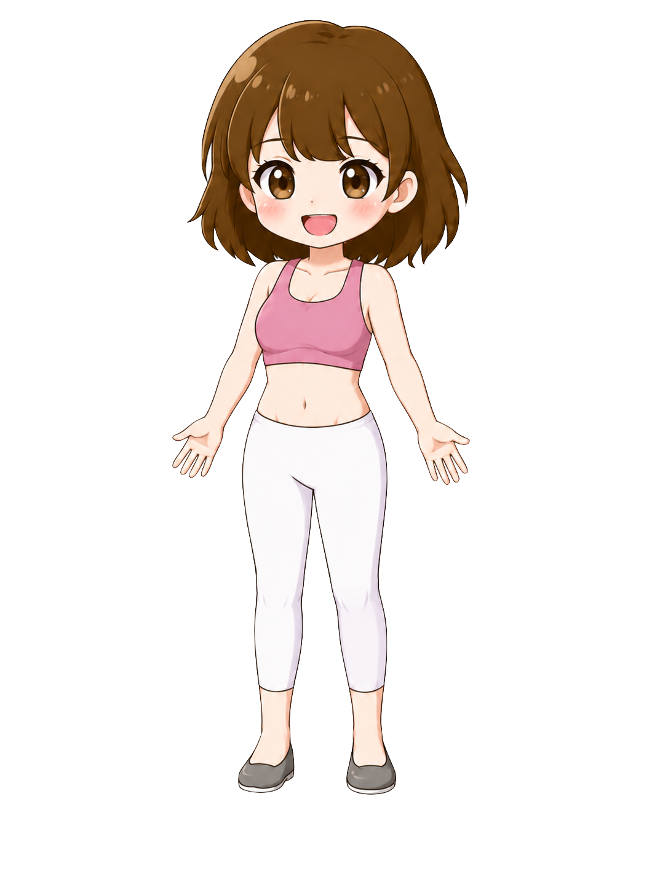

⚙️
5月25日(月)
今日も記録しよう！
✨⭐✨
Stage 5



✨
食事管理記録
📷タップして撮影
💡 料理名を入力すると候補が表示されます
😅 この料理はまだ登録されていません。別の名前で試してみてください。
🍛
料理名
AI分析結果
🔥カロリー—kcal
💪たんぱく質—g
🥑脂質—g
🌾炭水化物—g
🔥カロリー
—
—
💪たんぱく質
—
—
🥑脂質
—
—
🌾炭水化物
—
—
✨
キャラクターが変化！
バランスの良い食事だね！
🏆 ミッション
🍽
Daily
ログインする
1/1
💡 AIアドバイス
💬 今のあなたへ
🍽 あなたへのおすすめメニュー
📊 過去の記録
まだ記録がありません
👥 フォロー
今週の継続賞
🏆 友達と頑張ろう！
👗 着せ替え
👕 トップス
👗 ボトムス
👑 アクセサリー
👟 シューズ